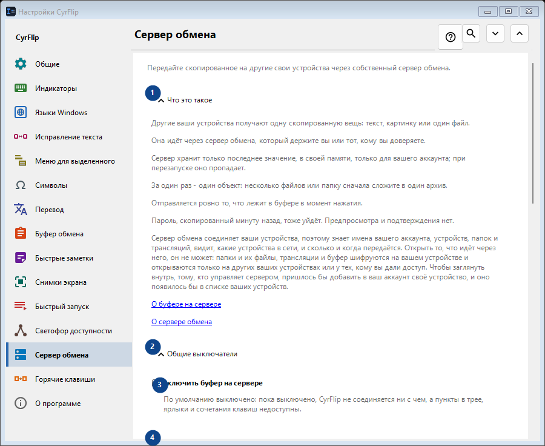
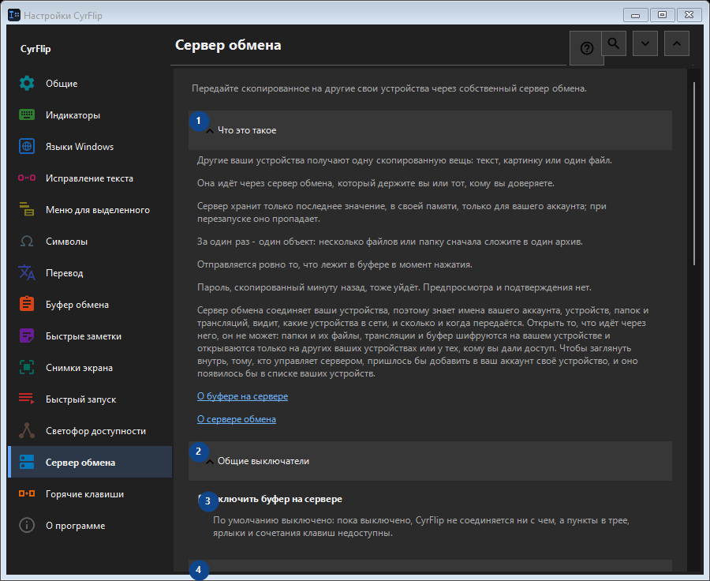

Сервер обмена
Для чего это окно
Передайте скопированное на другие свои устройства через собственный сервер обмена.


Порядок действий
Настройки применяются сразу. Обязательного порядка нет; используйте группы ниже.
Элементы
1. Что это такое
Используйте команду, когда нужно указанное действие. Прочитайте запрос подтверждения перед согласием.
Ваши сочетания клавиш2. Общие выключатели
Используйте команду, когда нужно указанное действие. Прочитайте запрос подтверждения перед согласием.
Ваши сочетания клавиш3. Включить буфер на сервере
По умолчанию выключено: пока выключено, CyrFlip не соединяется ни с чем, а пункты в трее, ярлыки и сочетания клавиш недоступны.
Ваши сочетания клавиш4. Аккаунты
Используйте команду, когда нужно указанное действие. Прочитайте запрос подтверждения перед согласием.
Ваши сочетания клавиш5. Добавить аккаунт..
Недоступно, пока выключен переключатель «Включить буфер на сервере» - сначала включите его. Элемент сейчас недоступен. Сначала включите функцию или выберите запись.
Ваши сочетания клавиш6. Сочетания клавиш и ярлыки
Используйте команду, когда нужно указанное действие. Прочитайте запрос подтверждения перед согласием.
Ваши сочетания клавиш7. Отправить буфер на сервер
Недоступно, пока выключен переключатель «Включить буфер на сервере» - сначала включите его. Элемент сейчас недоступен. Сначала включите функцию или выберите запись.
Ваши сочетания клавиш8. Изменить - Отправить буфер на сервер
Недоступно, пока выключен переключатель «Включить буфер на сервере» - сначала включите его. Элемент сейчас недоступен. Сначала включите функцию или выберите запись.
Ваши сочетания клавиш9. Получить буфер с сервера
Недоступно, пока выключен переключатель «Включить буфер на сервере» - сначала включите его. Элемент сейчас недоступен. Сначала включите функцию или выберите запись.
Ваши сочетания клавиш10. Изменить - Получить буфер с сервера
Недоступно, пока выключен переключатель «Включить буфер на сервере» - сначала включите его. Элемент сейчас недоступен. Сначала включите функцию или выберите запись.
Ваши сочетания клавиш11. Поместить «Отправить» на рабочий стол
Недоступно, пока выключен переключатель «Включить буфер на сервере» - сначала включите его. Элемент сейчас недоступен. Сначала включите функцию или выберите запись.
Ваши сочетания клавиш12. Поместить «Получить» на рабочий стол
Недоступно, пока выключен переключатель «Включить буфер на сервере» - сначала включите его. Элемент сейчас недоступен. Сначала включите функцию или выберите запись.
Ваши сочетания клавиш13. Полученные файлы
Используйте команду, когда нужно указанное действие. Прочитайте запрос подтверждения перед согласием.
Ваши сочетания клавиш14. Папка для файлов, полученных с сервера
Недоступно, пока выключен переключатель «Включить буфер на сервере» - сначала включите его. Элемент сейчас недоступен. Сначала включите функцию или выберите запись.
Ваши сочетания клавиш15. Выбрать - Папка для файлов, полученных с сервера
Недоступно, пока выключен переключатель «Включить буфер на сервере» - сначала включите его. Элемент сейчас недоступен. Сначала включите функцию или выберите запись.
Ваши сочетания клавиш16. Открыть папку - Папка для файлов, полученных с сервера
Недоступно, пока выключен переключатель «Включить буфер на сервере» - сначала включите его. Элемент сейчас недоступен. Сначала включите функцию или выберите запись.
Ваши сочетания клавиш